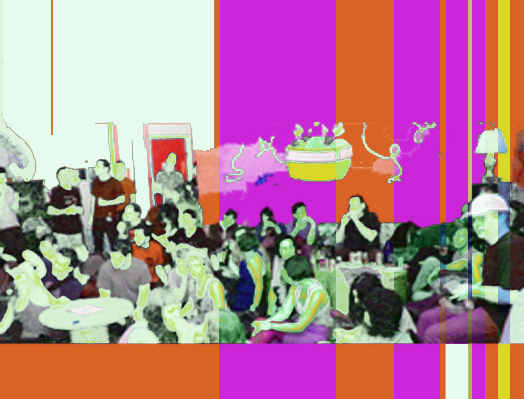

people doing strange things with electricity
The omega-th dorkbot-nyc meeting took place at 7pm on Wednesday, March 5th, 2008 at Location One in SoHo.
The meeting was free and open to the public. People brought snacks to share.
It featured the inscrutable and polymorphous:

Marie Evelyn: Analogous and similar projects
Complexity Theory is not new to art or to our culture. It migrated from computer science and biology to economics and art and, with the advent of the world wide web, it invaded our collective subconscious. Analogous seeks to support complexity-driven art and artists playing under this conceptual umbrella of "Interaction Art". Progress often occurs by metaphor and analogy. So their hope is that, by bringing together people and projects irrespective of media and genre, they can help to enable philosophical crosstalk. In this way, Analogous endeavors to serve the community as a sort of, ahem, "Santa Fe Institute" for the arts ..but without the millions of dollars and Nobel Prize winners. (Although, if you have millions to share, they are totally agreeable.)
http://AnalogousProjects.org
Noel Hidalgo: On the Luck of Seven
on 07 july 2007, noneck noel departed new york city to surf his social network. affably named "on the luck of seven," for seven months he stood on six continents and documented his connection to free culture, social innovators and global change. using micro-payments in-exchange for a children's book he will write, the trip was funded by over 500 internet users from around the world. at dorkbot, he will talk about the world's hospitably and 21st century anthropological view of the personalities in physical / digital world we cohabit.
http://luckofseven.com
Burak Arikan: MYPOCKET
I will talk about my recent project MYPOCKET, the personal spending prediction software, and Meta-Markets, an experimental stock market for trading socially networked creative products.
http://transition.turbulence.org/Works/mypocket
http://meta-markets.com
Some images from the meeting from:
Douglas
Roberto Tobar
Next Meeting: 02 April 2008